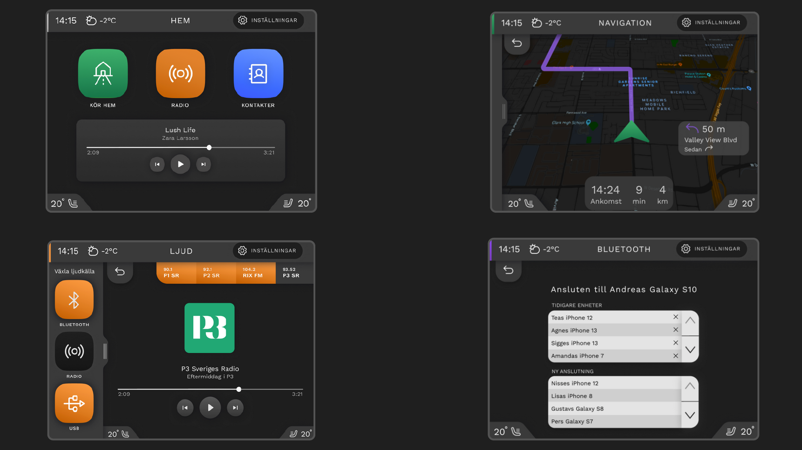

Infotainment User-Interface Design¶
This project was a collaborative assignemt for the course “Cognitive Design” at the Umeå Institute of Design (UID). The project was called “Me and my car” and the goal was to design an infotainment system for a car that integrates cognitive ergonomic principles and research to make the use of the interface as safe as possible.
The Assignment¶
An infotainment system is a system that combines information and entertainemnt. In a car it is mostly located in the center stack and often offers navigation, radio, telephone, climate control, and more. For this project, we were given four areas of focus: two obligatory and two voluntary. The areas were:
A start screen with a main menu and a radio/music interface (obligatory)
A navigation interface (obligatory)
Telephone interface (voluntary)
Climate control (voluntary)
My team chose to focus on 1, 2, and 4.

The different teams were also allocated a different car. My team was supposed to design an interface for the Nissan Juke (which you can see in the above image).
Initial Research¶
In this project we followed the double diamond model of the design process, popularised in 2005 by the Brittish Design Council.

As you can see in the above image of the model, we begin in the research process to create a wide understanding of the challange, the context, and the user. Therefore, our process started with an interview and user test of the Nissan Juke at a car vendor with a salesperson. This let us get an insignt into how the car’s current infotainment system worked, what the salesperson sees as the selling points of the car, as well as the car’s market.
Three User-Tests¶
Two main insights were identified in the first user-test with the car salesperson. First, the salesperson noted the usability of the cars interface, still employing physical buttons and a relatively simple touch based interface. Second, according to the salesperson, people mostly have the Nissan Juke as a second car, were simplicity and accesbility is usually considered more important than with main cars. It should be easy to go into the car and use the interface, preferably without taking of ones gloves during the winter.
After the interview and user-test with the salesperson at the car vendor, the team conducted two user-tests in other cars to get insights into what works and does not work for other infotainment systems.
The second user-test was conducted in a Peugeot 3008 (2019). During this test, the user remarked upon their preference for physical buttens, which mirrors what the car salesperson said about the Nissan Juke. The user noted the particiular usefulness of physical buttons for switching between the navigation interface, the radio/music interface, and the climate control interface (which in this car is within the infotainment system, as opposed to the Nissan Juke where it is located below the infotainment system in the center stack). This was because the buttons are easily located without taking ones eyes off the road, since one can utilize their tactile features – something which physical displayes lack.
The third and final initial user-test was conducted in a Volvo V70 (2017). This is an older car without a touch interface, but this user also notes that they like the physical buttons. One thing that they find a struggle however is connecting their phone to the car.
Functional Analysis and Theoretical Research¶
After the interviews we conducted a functional analysis of the different systems and elucidating the system requirements along with its main and sub functions.

We visualized this in a functional tree which is displayed in the above figure (in the Swedish language).
At this stage of the design process, I was tasked with gathering academic research on infotainment system design. The research highlighted that square buttons offer advantages in reducing interaction times (Jung et al., 2021). It also identified varying interaction times across different tasks: radio/music tasks had the shortest interaction times, followed by telephone tasks, while navigation tasks exhibited the longest interaction times (Strayer et al., 2017). Navigation tasks were also found to impose the highest cognitive demand.
Initially, one might think reducing cognitive demand would enhance the allocation of cognitive resources to attention. However, this is not always the case. Excessively reducing cognitive demand could encourage users to engage in non-driving-related activities (such as texting or phone calls), and may also result in a decrease in allocated attentional resources (Oppenheim & Shinar, 2011). This research, among others, was considered when designing our user-interface.
The Design Process¶
At this stage we started sketching ideas for the interfaces based on the previous stages. We split up, skteched on our own ideas for the different interfaces, and then later made three different low-fi prototypes that each could be tested by users.


Above you can see my own low-fidelity prototype based on my sketches along with the steering wheel. This was placed in front of an old car seat, with a computer screen in front playing a driving POV video to simulate driving.

Above is a picture taken during a user test with one of my teammate’s home menu interface. Based on these user tests conductet on thee particpants, we started integrating our design based on which aspects the users preferred.


Above you can see three wire frames created in Figma: first the home menu, second the navigation interface, second the screen where you choose a destination in the navigation interface. The first wire frame was based on my prototype of the home menu with a integrated media widget from a teammates low-fidelity prototype; latter two wireframes were created by me and entirely based om my low-fidelity prototypes.

When creating the wireframes, we got an idea of how we wanted our design to look like, what page structure it would have and the user flow, which was visualized as a flow chart (in Swedish) that can be seen above. The point of showing it is mostly to show that it is a quite shallow system, that is, the user will not get lost in a jungle of menus within menus. We deemed this to be an important aspect of our system, so that the user does not spend too much time navigating the infotainmentsystem.
After this stage, we started creating our high-fidelity, clickable prototype in Figma. Above you can see some of the screens of the high-fidelity prototype we created in Figma.
The homepage features shortcuts and audio playback at the top left, a navigation view adjacent to it, the radio view below, and the Bluetooth view at the bottom right. An idea we had early on, which persisted throughout the project, was to color-code the different pages in the interface for easy identification. The same color scheme was then used for shortcuts related to each page and the physical menu buttons acting as shortcuts to these pages. For instance, the navigation page has green buttons on the screen, and the button in the menu bar allowing the user to navigate to the same page has a green border at the top.

The colors in the system definitely lean more towards the ‘dark mode’ theme than ‘light mode’ (as seen above), which is more commonly found in cars. This provides a calmer feel and avoids distracting the driver with strong white colors that can demand a lot of visual attention. However, the palette includes relatively bold colors like green, orange, and blue. These are intended to stand out significantly to guide the driver if they need to use the screen while driving. The hope is that these distinct colors can provide a visual cue in the periphery about where to press to access the radio or click ‘drive home’. The system features plenty of familiar symbols and icons such as a contacts book for contacts, a house for ‘drive home’, and a flag for “destinations”. These are chosen to guide the driver with these visual representations to facilitate ease of navigation within the system.